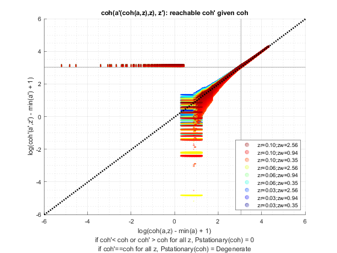
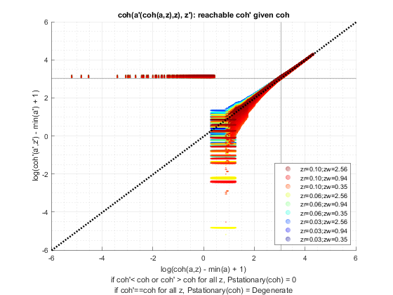

Derive Distributions for Save + Borrow One Asset (Wrapper)
back to Fan's Dynamic Assets Repository Table of Content.
Contents
function [result_map] = ff_abz_ds_wrapper(varargin)
FF_ABZ_DS_WRAPPER finds the stationary asset distributions
This is a warpper function. Note that when invoked by abz, there are two shocks, one for wage, another for the borrowing interest rate.
@include
- ffs_abz_set_default_param
- ffs_abz_get_funcgrid
- save + borr optimized-vectorized: ff_abz_vf_vecsv
- derive distribution f(y'(y,z)) one asset loop: ff_az_ds
- derive distribution f(y'({y},z)) or f(y'({x,y},z)) vectorized: ff_az_ds_vec
- derive distribution f(y'({y},z)) or f(y'({x,y},z)) semi-analytical: ff_az_ds_vecsv
Default
- it_subset = 5 is basic invoke quick test
- it_subset = 6 is invoke full test
- it_subset = 7 is profiling invoke
- it_subset = 8 is matlab publish
- it_subset = 9 is invoke operational (only final stats) and coh graph
it_param_set = 8; bl_input_override = true; [param_map, support_map] = ffs_abz_set_default_param(it_param_set); % Note: param_map and support_map can be adjusted here or outside to override defaults % param_map('it_a_n') = 750; % param_map('fl_z_r_borr_n') = 5; % param_map('it_z_wage_n') = 15; % param_map('it_z_n') = param_map('it_z_wage_n') * param_map('fl_z_r_borr_n'); % param_map('fl_r_save') = 0.025; % These parameters below for comparison with abz_fibs model % param_map('fl_r_save') = 0.025; % param_map('fl_r_borr') = 0.095; param_map('fl_z_r_borr_poiss_mean') = 20; param_map('fl_c_min') = 0.02; % param_map('st_analytical_stationary_type') = 'loop'; % param_map('st_analytical_stationary_type') = 'vector'; param_map('st_analytical_stationary_type') = 'eigenvector'; % get armt and func map [armt_map, func_map] = ffs_abz_get_funcgrid(param_map, support_map, bl_input_override); % 1 for override default_params = {param_map support_map armt_map func_map};
Parse Parameters 1
% if varargin only has param_map and support_map, params_len = length(varargin); [default_params{1:params_len}] = varargin{:}; param_map = [param_map; default_params{1}]; support_map = [support_map; default_params{2}]; if params_len >= 1 && params_len <= 2 % If override param_map, re-generate armt and func if they are not % provided bl_input_override = true; [armt_map, func_map] = ffs_abz_get_funcgrid(param_map, support_map, bl_input_override); else % Override all armt_map = [armt_map; default_params{3}]; func_map = [func_map; default_params{4}]; end % if profile, profile DP + Dist here support_map('bl_profile_dist') = false; % append function name st_func_name = 'ff_abz_ds_wrapper'; support_map('st_profile_name_main') = [st_func_name support_map('st_profile_name_main')]; support_map('st_mat_name_main') = [st_func_name support_map('st_mat_name_main')]; support_map('st_img_name_main') = [st_func_name support_map('st_img_name_main')];
Parse Parameters
% param_map params_group = values(param_map, {'st_analytical_stationary_type'}); [st_analytical_stationary_type] = params_group{:}; % support_map params_group = values(support_map, ... {'st_profile_path', 'st_profile_prefix', 'st_profile_name_main', 'st_profile_suffix','bl_time'}); [st_profile_path, st_profile_prefix, st_profile_name_main, st_profile_suffix, bl_time] = params_group{:};
Start Profiler and Timer
Start Profile
if (it_param_set == 7) close all; profile off; profile on; end % Start Timer if (bl_time) tic; end
Solve DP
bl_input_override = true; result_map = ff_abz_vf_vecsv(param_map, support_map, armt_map, func_map);
Map with properties:
Count: 35
KeyType: char
ValueType: any
pos = 1 ; key = bl_b_is_principle ; val = true
pos = 2 ; key = bl_default ; val = true
pos = 3 ; key = bl_loglin ; val = false
pos = 4 ; key = fl_a_max ; val = 50
pos = 5 ; key = fl_a_min ; val = 0
pos = 6 ; key = fl_b_bd ; val = -20
pos = 7 ; key = fl_beta ; val = 0.94
pos = 8 ; key = fl_c_min ; val = 0.02
pos = 9 ; key = fl_crra ; val = 1.5
pos = 10 ; key = fl_default_aprime ; val = 0
pos = 11 ; key = fl_loglin_threshold ; val = 1
pos = 12 ; key = fl_nan_replace ; val = -99999
pos = 13 ; key = fl_r_save ; val = 0.025
pos = 14 ; key = fl_tol_dist ; val = 1e-05
pos = 15 ; key = fl_tol_pol ; val = 1e-05
pos = 16 ; key = fl_tol_val ; val = 1e-05
pos = 17 ; key = fl_w ; val = 1.28
pos = 18 ; key = fl_z_r_borr_max ; val = 0.095
pos = 19 ; key = fl_z_r_borr_min ; val = 0.025
pos = 20 ; key = fl_z_r_borr_n ; val = 5
pos = 21 ; key = fl_z_r_borr_poiss_mean ; val = 20
pos = 22 ; key = fl_z_wage_mu ; val = 0
pos = 23 ; key = fl_z_wage_rho ; val = 0.8
pos = 24 ; key = fl_z_wage_sig ; val = 0.2
pos = 25 ; key = it_a_n ; val = 750
pos = 26 ; key = it_maxiter_dist ; val = 1000
pos = 27 ; key = it_maxiter_val ; val = 1000
pos = 28 ; key = it_tol_pol_nochange ; val = 25
pos = 29 ; key = it_trans_power_dist ; val = 1000
pos = 30 ; key = it_z_n ; val = 75
pos = 31 ; key = it_z_wage_n ; val = 15
pos = 32 ; key = st_analytical_stationary_type ; val = eigenvector
pos = 33 ; key = st_model ; val = abz
pos = 34 ; key = st_z_r_borr_drv_ele_type ; val = unif
pos = 35 ; key = st_z_r_borr_drv_prb_type ; val = poiss
Map with properties:
Count: 37
KeyType: char
ValueType: any
pos = 1 ; key = bl_display ; val = false
pos = 2 ; key = bl_display_defparam ; val = true
pos = 3 ; key = bl_display_dist ; val = false
pos = 4 ; key = bl_display_final ; val = false
pos = 5 ; key = bl_display_final_dist ; val = true
pos = 6 ; key = bl_display_final_dist_detail ; val = true
pos = 7 ; key = bl_display_funcgrids ; val = false
pos = 8 ; key = bl_graph ; val = true
pos = 9 ; key = bl_graph_coh_t_coh ; val = true
pos = 10 ; key = bl_graph_funcgrids ; val = false
pos = 11 ; key = bl_graph_onebyones ; val = true
pos = 12 ; key = bl_graph_pol_lvl ; val = false
pos = 13 ; key = bl_graph_pol_pct ; val = false
pos = 14 ; key = bl_graph_val ; val = false
pos = 15 ; key = bl_img_save ; val = false
pos = 16 ; key = bl_mat ; val = false
pos = 17 ; key = bl_post ; val = true
pos = 18 ; key = bl_profile ; val = false
pos = 19 ; key = bl_profile_dist ; val = false
pos = 20 ; key = bl_time ; val = true
pos = 21 ; key = it_display_every ; val = 20
pos = 22 ; key = it_display_final_colmax ; val = 15
pos = 23 ; key = it_display_final_rowmax ; val = 100
pos = 24 ; key = st_img_name_main ; val = ff_abz_vf_vecsvff_abz_ds_wrapper_default
pos = 25 ; key = st_img_path ; val = C:/Users/fan/CodeDynaAsset//m_abz//solve/img/
pos = 26 ; key = st_img_prefix ; val =
pos = 27 ; key = st_img_suffix ; val = _p8.png
pos = 28 ; key = st_mat_name_main ; val = ff_abz_vf_vecsvff_abz_ds_wrapper_default
pos = 29 ; key = st_mat_path ; val = C:/Users/fan/CodeDynaAsset//m_abz//solve/mat/
pos = 30 ; key = st_mat_prefix ; val =
pos = 31 ; key = st_mat_suffix ; val = _p8
pos = 32 ; key = st_matimg_path_root ; val = C:/Users/fan/CodeDynaAsset//m_abz/
pos = 33 ; key = st_profile_name_main ; val = ff_abz_vf_vecsvff_abz_ds_wrapper_default
pos = 34 ; key = st_profile_path ; val = C:/Users/fan/CodeDynaAsset//m_abz//solve/profile/
pos = 35 ; key = st_profile_prefix ; val =
pos = 36 ; key = st_profile_suffix ; val = _p8
pos = 37 ; key = st_title_prefix ; val =
Elapsed time is 9.602676 seconds.
Warning: Using only the real component of complex data.
Warning: Using only the real component of complex data.
Warning: Using only the real component of complex data.
Warning: Using only the real component of complex data.
Warning: Using only the real component of complex data.
Warning: Using only the real component of complex data.
Warning: Using only the real component of complex data.
Warning: Using only the real component of complex data.
Warning: Using only the real component of complex data.
Warning: Using only the real component of complex data.
Warning: Using only the real component of complex data.
Warning: Using only the real component of complex data.
Warning: Using only the real component of complex data.
Warning: Using only the real component of complex data.
Warning: Using only the real component of complex data.
Warning: Using only the real component of complex data.
Warning: Using only the real component of complex data.
Warning: Using only the real component of complex data.
Warning: Using only the real component of complex data.
Warning: Using only the real component of complex data.
Warning: Using only the real component of complex data.
Warning: Using only the real component of complex data.
Warning: Using only the real component of complex data.
Warning: Using only the real component of complex data.
Warning: Using only the real component of complex data.
Warning: Using only the real component of complex data.
Warning: Using only the real component of complex data.
Warning: Using only the real component of complex data.
Warning: Using only the real component of complex data.
Warning: Using only the real component of complex data.
Warning: Using only the real component of complex data.
Warning: Using only the real component of complex data.
Warning: Using only the real component of complex data.
Warning: Using only the real component of complex data.
Warning: Using only the real component of complex data.
Warning: Using only the real component of complex data.
Warning: Using only the real component of complex data.
Warning: Using only the real component of complex data.
Warning: Using only the real component of complex data.
Warning: Using only the real component of complex data.
Warning: Using only the real component of complex data.
Warning: Using only the real component of complex data.
Warning: Using only the real component of complex data.
Warning: Using only the real component of complex data.
Warning: Using only the real component of complex data.
Warning: Using only the real component of complex data.
Warning: Using only the real component of complex data.
Warning: Using only the real component of complex data.
Warning: Using only the real component of complex data.
Warning: Using only the real component of complex data.
Warning: Using only the real component of complex data.
Warning: Using only the real component of complex data.
Warning: Using only the real component of complex data.
Warning: Using only the real component of complex data.
Warning: Using only the real component of complex data.
Warning: Using only the real component of complex data.
Warning: Using only the real component of complex data.
Warning: Using only the real component of complex data.
Warning: Using only the real component of complex data.
Warning: Using only the real component of complex data.
Warning: Using only the real component of complex data.
Warning: Using only the real component of complex data.
Warning: Using only the real component of complex data.
Warning: Using only the real component of complex data.
Warning: Using only the real component of complex data.
Warning: Using only the real component of complex data.
Warning: Using only the real component of complex data.
Warning: Using only the real component of complex data.
Warning: Using only the real component of complex data.
Warning: Using only the real component of complex data.
Warning: Using only the real component of complex data.
Warning: Using only the real component of complex data.
Warning: Using only the real component of complex data.
Warning: Using only the real component of complex data.
Warning: Using only the real component of complex data.
 
 Derive Distribution
Note that the pYisMINY statistics show the proportion of households at the minimum borrowing bound, where default takes place, and shows therefore the fraction of households defaulting.
if (strcmp(st_analytical_stationary_type, 'loop')) result_map = ff_az_ds(param_map, support_map, armt_map, func_map, result_map, bl_input_override); elseif (strcmp(st_analytical_stationary_type, 'vector')) result_map = ff_az_ds_vec(param_map, support_map, armt_map, func_map, result_map, bl_input_override); elseif (strcmp(st_analytical_stationary_type, 'eigenvector')) result_map = ff_az_ds_vecsv(param_map, support_map, armt_map, func_map, result_map, bl_input_override); end
Elapsed time is 7.255442 seconds.
----------------------------------------
xxxxxxxxxxxxxxxxxxxxxxxxxxxxxxxxxxxxxxxx
Summary Statistics for: cl_mt_pol_a
xxxxxxxxxxxxxxxxxxxxxxxxxxxxxxxxxxxxxxxx
----------------------------------------
fl_choice_mean
-2.8127
fl_choice_sd
5.3373
fl_choice_coefofvar
-1.8976
fl_choice_prob_zero
0.0746
fl_choice_prob_below_zero
0.6244
fl_choice_prob_above_zero
0.3010
fl_choice_prob_max
-6.6354e-36
tb_prob_drv
percentiles cl_mt_pol_aPercentileValues fracOfSumHeldBelowThisPercentile
___________ ___________________________ ________________________________
0.1 -20 0.13394
1 -20 0.13394
5 -15.514 0.33013
10 -11.402 0.56745
15 -8.2243 0.74103
20 -5.8879 0.8639
25 -4.1121 0.95237
35 -1.9626 1.0588
50 -0.56075 1.1202
65 0 1.1301
75 0.18692 1.1275
80 0.46729 1.1201
85 0.74766 1.1104
90 1.3084 1.0908
95 2.1495 1.062
99 4.2991 1.019
99.9 7.0093 1.0028
----------------------------------------
xxxxxxxxxxxxxxxxxxxxxxxxxxxxxxxxxxxxxxxx
Summary Statistics for: cl_mt_coh
xxxxxxxxxxxxxxxxxxxxxxxxxxxxxxxxxxxxxxxx
----------------------------------------
fl_choice_mean
-1.8133
fl_choice_sd
5.9047
fl_choice_coefofvar
-3.2563
fl_choice_prob_zero
0
fl_choice_prob_below_zero
0.4402
fl_choice_prob_above_zero
0.5598
fl_choice_prob_max
-6.6354e-36
tb_prob_drv
percentiles cl_mt_cohPercentileValues fracOfSumHeldBelowThisPercentile
___________ _________________________ ________________________________
0.1 -21.217 0.01875
1 -20.691 0.12893
5 -15.838 0.51609
10 -11.295 0.88619
15 -7.8668 1.148
20 -5.2963 1.3277
25 -3.406 1.4464
35 -1.1012 1.5636
50 0.48043 1.5791
65 1.2088 1.5016
75 1.6818 1.4243
80 1.9692 1.3766
85 2.3749 1.3153
90 2.9497 1.2432
95 3.9868 1.1497
99 6.3512 1.0421
99.9 9.3251 1.0057
----------------------------------------
xxxxxxxxxxxxxxxxxxxxxxxxxxxxxxxxxxxxxxxx
Summary Statistics for: cl_mt_pol_c
xxxxxxxxxxxxxxxxxxxxxxxxxxxxxxxxxxxxxxxx
----------------------------------------
fl_choice_mean
1.3866
fl_choice_sd
0.3046
fl_choice_coefofvar
0.2196
fl_choice_prob_zero
0
fl_choice_prob_below_zero
0
fl_choice_prob_above_zero
1.0000
fl_choice_prob_max
-6.6354e-36
tb_prob_drv
percentiles cl_mt_pol_cPercentileValues fracOfSumHeldBelowThisPercentile
___________ ___________________________ ________________________________
0.1 0.02 0.00026999
1 0.02 0.00026999
5 1.1324 0.026478
10 1.1524 0.067636
15 1.171 0.11052
20 1.1887 0.1559
25 1.1999 0.19552
35 1.2441 0.28363
50 1.3724 0.42329
65 1.4868 0.57684
75 1.5312 0.68604
80 1.5841 0.74224
85 1.6466 0.80083
90 1.7487 0.86157
95 1.8832 0.92644
99 2.1551 0.98362
99.9 2.4784 0.99812
xxx All Variables PERCENTILES AND STATS xxx
tb_outcomes_meansdperc: mean, sd, percentiles
mean sd coefofvar min max pYis0 pYls0 pYgr0 pYisMINY pYisMAXY p0_1 p1 p5 p10 p15 p20 p25 p35 p50 p65 p75 p80 p85 p90 p95 p99 p99_9
_______ _______ _________ _______ ______ ________ _______ _______ __________ ___________ _______ _______ _______ _______ _______ _______ _______ _______ ________ ______ _______ _______ _______ ______ ______ ______ ______
cl_mt_pol_a -2.8127 5.3373 -1.8976 -20 49.533 0.074599 0.62442 0.30098 0.018836 -6.6354e-36 -20 -20 -15.514 -11.402 -8.2243 -5.8879 -4.1121 -1.9626 -0.56075 0 0.18692 0.46729 0.74766 1.3084 2.1495 4.2991 7.0093
cl_mt_coh -1.8133 5.9047 -3.2563 -21.455 54.536 0 0.44021 0.55979 7.3658e-05 -6.6354e-36 -21.217 -20.691 -15.838 -11.295 -7.8668 -5.2963 -3.406 -1.1012 0.48043 1.2088 1.6818 1.9692 2.3749 2.9497 3.9868 6.3512 9.3251
cl_mt_pol_c 1.3866 0.30456 0.21964 0.02 5.0031 0 0 1 0.018719 -6.6354e-36 0.02 0.02 1.1324 1.1524 1.171 1.1887 1.1999 1.2441 1.3724 1.4868 1.5312 1.5841 1.6466 1.7487 1.8832 2.1551 2.4784
xxx All Variables Fraction of Y Held up to Percentile xxx
tb_outcomes_fracheld: fraction of asset/income/etc held by hh up to this percentile
fracByP0_1 fracByP1 fracByP5 fracByP10 fracByP15 fracByP20 fracByP25 fracByP35 fracByP50 fracByP65 fracByP75 fracByP80 fracByP85 fracByP90 fracByP95 fracByP99 fracByP99_9
__________ __________ ________ _________ _________ _________ _________ _________ _________ _________ _________ _________ _________ _________ _________ _________ ___________
cl_mt_pol_a 0.13394 0.13394 0.33013 0.56745 0.74103 0.8639 0.95237 1.0588 1.1202 1.1301 1.1275 1.1201 1.1104 1.0908 1.062 1.019 1.0028
cl_mt_coh 0.01875 0.12893 0.51609 0.88619 1.148 1.3277 1.4464 1.5636 1.5791 1.5016 1.4243 1.3766 1.3153 1.2432 1.1497 1.0421 1.0057
cl_mt_pol_c 0.00026999 0.00026999 0.026478 0.067636 0.11052 0.1559 0.19552 0.28363 0.42329 0.57684 0.68604 0.74224 0.80083 0.86157 0.92644 0.98362 0.99812
End Profiler and Timer
End Timer
if (bl_time) toc; end % End Profile if (it_param_set == 7) profile off profile viewer st_file_name = [st_profile_prefix st_profile_name_main st_profile_suffix]; profsave(profile('info'), strcat(st_profile_path, st_file_name)); end
Elapsed time is 7.806379 seconds.
end
ans =
Map with properties:
Count: 11
KeyType: char
ValueType: any